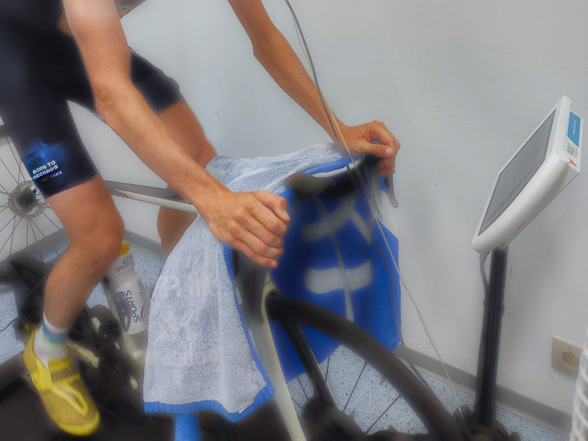
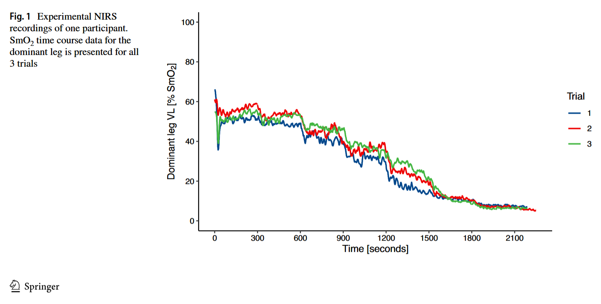
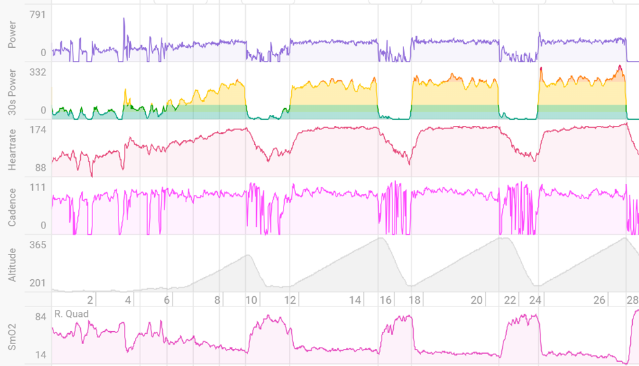

Science Translated: How reliable is your muscle oxygen saturation monitor?
This is the first blog post in the series Science translated, where I take scientific articles and explain how it can inform practices in the applied sports world

A few days after I started writing this blog, news made the round1 that both Garmin and Whoop might extend their wearable offerings with devices to measure muscle oxygen saturation and provide the user with a muscle battery score. With two big players daring to invest into near-infrared spectroscopy, it becomes especially relevant to review some basics.
Before trusting any new wearable with your training decisions, it’s worth asking: How reliable is the underlying measurement?
Over the last decade endurance sport has seen a substantial rise of technological advances. Measurement devices previously only available for laboratory-based research become increasingly smaller and cheaper. Almost every runner nowadays has a GPS sports watch connected to a heart rate monitor. Many cyclists have a power meter. This already provides incredible insights into the work performed (what sport scientists call external load) and how the body responses to the work (called internal load).
Heart rate is a global measure of how hard the body has to work during exercise. Thus, it can represent how hard you’re working overall. If you push into the red zone, your heart rate is close to the maximum and you won’t be able to continue exercising for long. As a global measure, heart rate does not allow us to understand what happens in the periphery - in the muscles that are actually working. This is where the technology called near-infrared spectroscopy (NIRS) comes in. These devices are placed on a muscle of interest to gain insights how oxygen – the source of sustainable endurance exercise – is used in that muscle. Adding an additional layer of information from the periphery may allow to improve how training is executed, potentially allowing to maximize the training stimulus or to train smarter.
In this post, I will first cover the basics of the technology and then present the results of a scientific study: Skotzke et al. (2024) investigated the day-to-day variability of the Moxy Monitor, a wearable muscle oxygen saturation monitor and differences between left and right leg. This is important information for anyone considering to use NIRS in cycling or other endurance sports.
Disclaimer: The study presented in this blog was authored by myself. We bought the NIRS devices ourselves and don’t have any conflict of interest to disclose. Everything written here is my own personal opinion.
With the goal to keep the blog post easy to understand for non-experts, I will add a few more technical comments in these callouts, hoping other scientists will find them helpful.
How NIRS works
The basic principle is simple.
As the name suggests, light in the near-infrared spectrum is sent into the muscle. Then, a detector measures the returning light. Based on the difference between how much light was sent into the muscle and how much light returns, up to 4 parameters of the oxygenation status under the sensor can be calculated.
This works because the oxygen transporting molecules – hemoglobin and myoglobin – have absorption spectra in the range of near-infrared light. If hemoglobin is transporting oxygen, it turns red2 and the light gets absorbed. If not enough oxygen is taken up in the lungs or more oxygen is used in the muscle, hemoglobin is without oxygen and does not absorb the same wavelengths. This can be seen based on the returning light we measure.
Check out this nice animation from Artinis, one of the leading manufacturers of NIRS equipment.
Many of the consumer based sensors report two measures: Muscle oxygen saturation (SmO2, sometimes called tissue saturation index, TSI or StO2) and total hemoglobin (THb). Let’s briefly explain their interpretation:
SmO2 is the balance between oxygen delivery and utilization.
SmO2 is a saturation measure and can (theoretically) range from 0 % to 100 %. When more oxygen is used than is delivered, SmO2 will drop. If delivery surpasses utilization - for example when we stop exercising - SmO2 goes up.
As becomes evident, how SmO2 changes provides immense information on how external load is related to the demand on a specific muscle. To date, many research articles, coaches and athletes have focused on the SmO2 value itself. This is attractive: SmO2 can be easily displayed in real time on sports watches or bike computers.
This is also what the study presented below investigated: How much does the SmO2 value vary from one day to another - when cycling at the same power output.
Thb reflects the volume of blood under the sensor.
Sometimes THb is mistakenly interpreted as blood flow. However, this is not correct and its relation to blood flow is more complicated3. For this blog post, we will omit a more detailed discussion of THb.
Day-to-day variability of muscle oxygen saturation.
When adopting new technology, it is important to perform a quality assessment4. Day-to-day repeatability refers to the ability to obtain the same measurements under similar testing condition at different points in time.
This is what Skotzke et al. (2024) investigated in cycling. In addition, they compared SmO2 between the vastus lateralis muscle, one of the main locomotor muscles, between the left and right leg. Let’s briefly review the study design.
Methods
The study tested a group of 12 male cyclists and triathletes that were characterized as trained. This is important: They were used to cycling exercise, which makes them better at producing similar performances in repeated tests compared to untrained people.
These 12 cyclists repeated a cycling exercise test commonly used in exercise testing: They started cycling at 1 watt per kilogram body weight for 5 minutes. Then, the power output was increased by 0.5 W/kg every 5 minutes. The test ended when the cyclist could not continue cycling. This test protocol was repeated with at least 2 days to recover and maximal 7 days between two tests to avoid training-induced improvements.
This type of test design has a few advantages:
- the starting power output and increase were based on the athlete’s weight, making it easier to compare results across athletes of different sizes.
- the participants were allowed to do light training the day before the test and were not asked to fully rest. This makes the data more applicable to the real demands of athletes training every day.
- long 5-minute stages allow SmO2 to stabilize, better representing steady-state exercise.
At the same time, it also has some disadvantages:
- Only fit males were tested. This presents a major limitation in transferring the results to females and less fit people. How much fat tissue is between the sensor and the muscle affects the readings negatively. Females and less fit individuals usually have a thicker fat tissue layer. Consequently, it is difficult to conclude if the results apply to those groups as well.
- Even though the stages were 5 minutes long, the protocol does not reflect prolonged cycling. Is the stabilized SmO2 representative of SmO2 after 30 minutes? The study cannot answer this.
Overall, it allowed to access a range of power outputs to characterize how SmO2 varies between 3 tests. For that, SmO2 in the last minute of each stage was averaged. As indicated above, the reason for this is that SmO2 is more stable. Thus, the first part of the stage was excluded.
Then, SmO2 was compared between tests and between the dominant and not-dominant leg.5. Figure 2 shows how the raw SmO2 for the dominant leg in one participant looks like.

Results
Day-to-day variability of SmO2
The day-to-day variability of SmO2 can be summarized in one single number:
SmO2 at the same power output varies by 5-7 % between repeated tests.
This was the same for the left and right leg and at low and high power outputs.
When investigating the absolute reliability, it is important to check if the data is homoscedastic or heteroscedastic. For SmO2, the test-retest difference is around ~6 % measurement units independent of its value. Therefore, if the coefficient of variation would have been calculated, it would increase at higher power outputs and with decreasing SmO2.
This does not mean SmO2 gets less reliable at higher power outputs - it’s the wrong way to look at the variability. Unfortunately, not all research studies test for heteroscedasticity and use the appropriate statistic based on the nature of the data.
Differences between the two legs
The study did not find any systematic difference between the dominant and non-dominant leg.
On average, SmO2 was not different between legs. In this sample of athletes, SmO2 was merely 2 % lower in the dominant leg.
However, it was found that the random (unsystematic) differences were quite large:
The differences in SmO2 could be 20 % lower or 20 % higher in the dominant leg compared to the non-dominant leg.
The study did not try to explain why these large difference were observed. It could be the result of some actual differences or technical aspects of the measurement.
Bland-Altman plots are a useful tool to compare two measures. In this study, the data across all power outputs and the three trials were pooled. Therefore, the limits of agreement must be adjusted for repeated observations of the same individual as outlined by Bland & Altman (2007).
This is a crucial step for the correct interpretation of the Limits of Agreement that often is forgotten.
Practical relevance
The results of this study help to inform two important aspects for implementing NIRS in training:
The first thing athletes will see once they connect a NIRS device to their sports watch or bike computer is SmO2. It is easy to target a specific value for your training session. However, I recommend to be careful with this approach.
For example, the data shown in Figure 2 shows a range of SmO2 from ~60 % at the beginning of the test to ~8 % at the end of the test. This gives this specific athlete a functional range of 52 % points on the SmO2 scale. The day-to-day variability is 6 % points, which is almost 12 % of the athlete’s functional range!
Consequently, targeting a specific SmO2 value might be less meaningful than you would want.
The second question that this study informs is that the NIRS sensor can be placed on either leg - SmO2 will be similar. Of course, this only applies to healthy athletes and could be different when the athlete suspects to have any muscle weakness or blood flow impairment on one side. But for most, we don’t have reason to believe that it really matters on which leg the sensor is positioned.
What this means
Athletes should not rely on absolute SmO2 for their training. The day-to-day variability of SmO2 is around 6 %, supported by other studies investigating the reliability of the Moxy Monitor. My personal interpretation is that this 6 % variability is large and leaves room for errors in training execution when the training is guided based on SmO2.
How will new NIRS sensors from Garmin and Whoop compare in accuracy and reproducibility?
We don’t know. However, the penetration depth of the light may be relevant for the quality of results we get. For wearable devices, this is inherently limited by the sensor size. Only time will tell if new sensors can make improvements.
Where are we heading next?
Another logical conclusion is as follows: Don’t focus on the absolute SmO2 value. As mentioned above, the change in SmO2 may hold much more useful information than SmO2 itself. Research is pointing in this direction, suggesting that the SmO2 slope can be used to identify the maximal metabolic steady state6 – or what is called threshold by many athletes. What this looks like in training can be seen in Figure 3.

How fast SmO2 recovers after intervals might also have value7, and the time at low SmO2 could be a good measure of stimulus for training adaptations on the muscle level8.
However, at the current moment none of these applications are readily available for the typical user. SmO2 itself can be shown on your watch or bike computer. These more advanced metrics are not yet readily available. Yes, it is possible to display the current SmO2 trend with some custom Garmin data fields9.
However, to date NIRS data is not accessible. Making sense of the data is challenging.
This is where the Garmins and Whoops of this world face an enormous challenge. Why would we expect them to do a better job at this than specialized companies? But it is their chance to shine. These companies have large teams and have the chance to integrate NIRS technology deeper into the system, making the device easy to use and helping in giving the muscle oxygenation insights meaning.
NIRS devices already have the right form factor and ease of use for daily training. The missing piece is making the data meaningful. Once that’s solved, NIRS can really take off.
References
Footnotes
this is a simplification↩︎
interested readers can check Barstow (2019) for necessary assumptions and application↩︎
read this sports tech quality framework for more information↩︎
for most participants, the right leg was the dominant↩︎
the proof-of-concept was demonstrated by Kirby et al. (2021) and Mathews et al. (2023).↩︎
exercise intensity seems to affect the reoxygenation speed, read Arnold et al. (2024)↩︎